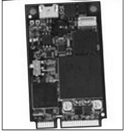

Сертифицированные программно-аппаратные средства ЗИ
Программно-аппаратные средства доверенной загрузки представляют класс изделий, чьи функции заключаются в надежной идентификации пользователя и в проверке целостности программного обеспечения ПК. Обычно это плата расширения персонального компьютера с необходимым программным обеспечением, записанным либо во Flash-память платы, либо на жесткий диск компьютера.
Наверх
Принцип действия их простой — в процессе отработки BIOS плат расширения стартует BIOS и платы защиты от НСД. Запрошенный идентификатор пользователя сравнивается с хранимым во Flash-памяти карты. Идентификатор дополнительно может защищаться паролем. Затем стартует встроенная ОС платы или ПК — чаще всего это вариант MS-DOS, после чего стартует программа проверки целостности программного обеспечения ПК. Как правило, проверяются системные области загрузочного диска, загрузочные файлы и файлы, задаваемые самим пользователем для проверки. Проверка осуществляется либо на основе имитовставки алгоритма ГОСТ 28147-89, либо на основе функции хеширования алгоритма ГОСТ Р 34.11-34 или иного алгоритма. Результат проверки сравнивается с хранимым в Flash-памяти карты. Если в результате сравнения выявлено различие с эталоном, то плата заблокирует дальнейшую работу и выдаст соответствующее сообщение на экран. Если проверки дали положительный результат, то плата передает управление ПК для дальнейшей загрузки ОС.
Все процессы идентификации и проверки целостности фиксируются в журнале. Достоинством данного класса устройств является их высокая надежность, простота и небольшая стоимость. При отсутствии многопользовательской работы на ПК функций защиты данного средства обычно достаточно.
СЗИ НСД «Аккорд-АМДЗ» представляют класс изделий, выполняющих функции аппаратных модулей доверенной загрузки для IBM-совместимых ПК — серверов и рабочих станций (в локальной сети и автономных), обеспечивающий защиту устройств и информационных ресурсов от несанкционированного доступа.
Комплекс начинает работу сразу после выполнения штатной BIOS компьютера, и обеспечивает доверенную загрузку ОС, работающих с файловыми системами FAT 12, FAT 16, FAT 32, NTFS, HPFS, EXT2FS, EXT3FS, FreeBSD, S0I86FS, QNXFS, MINIX. Это, в частности, ОС семейств MS DOS, Windows (9x/ME/NT/2000/XP/ 2003/Vista), QNX, OS/2, UNIX, LINUX, BSD и др.
Поскольку на процесс загрузки ОС семейства Windows влияют не только системные файлы, но и реестр, одновременно с контролем файловой системы необходимо контролировать неизменность отдельных ветвей реестра. В «Аккорд-АМДЗ» реализована такая возможность.
 Один из вариантов реализации программно-аппаратного комплекса средств защиты информации от НСД «Аккорд- АМДЗ» — «Аккорд-5 MX mini-PCI»
Условно все современные программно-аппаратные средства защиты информации можно разделить на три основные группы:
А. Средства, разработанные для защиты информации от НСД в информационных сетях, но допускающие применение и в персональных компьютерах;
Б. Средства, принципиально применимые только в компьютерных сетях и предназначенные для разделения информационных потоков, — так называемые межсетевые экраны;
В. Средства, принципиально предназначенные для защиты информации от НСД в персональных компьютерах.
Рассмотрим их более подробно.
А. Средства защиты информации в информационных сетях
В так называемой группе А к наиболее известным программно-аппаратным средствам относятся:
>• система защиты от НСД «Спектр-Z»;
>• система Secret Net;
>• программно-аппаратный комплекс защиты DAALLAS LOCK;
>• программно-аппаратная система «Криптон-Вето»;
>• система криптографической защиты информации «Верба-0»;
>• криптографический комплекс «Шифратор IP потоков» (ШИП).
Б. Межсетевые экраны
Межсетевой экран (МЭ) — это локальное (однокомпонентное) или функционально-распределенное программное (программно-аппаратное) средство (комплекс), реализующее контроль информации, поступающей в автоматизированную систему и/или выходящей из нее.
В. Программно-аппаратные средства защиты конфиденциальной информации в персональном компьютере
Secret Disk. Программно-аппаратное средство Secret Disk предназначено для защиты конфиденциальной информации на ПК, прежде всего типа Notebook.
Основные возможности:
>• защита данных осуществляется с помощью профессиональных алгоритмов шифрования;
>• генерация ключей самим пользователем;
>• двойная аутентификация пользователя (аппаратная и по паролю)